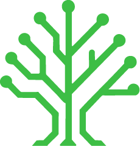
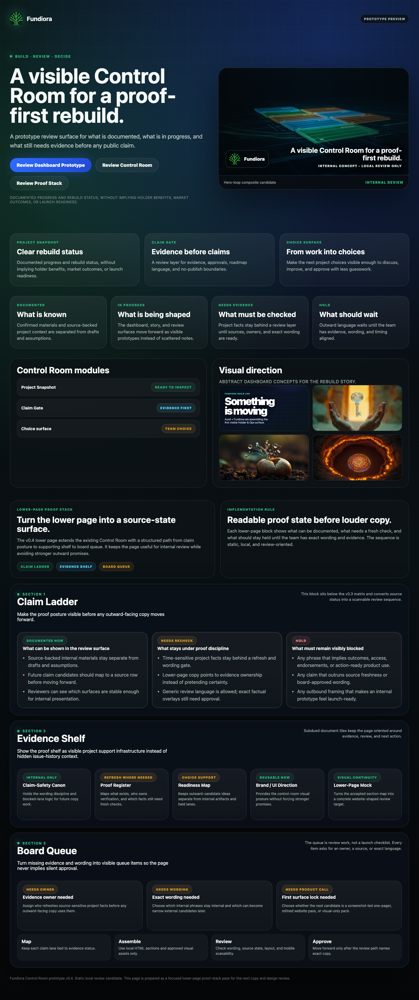
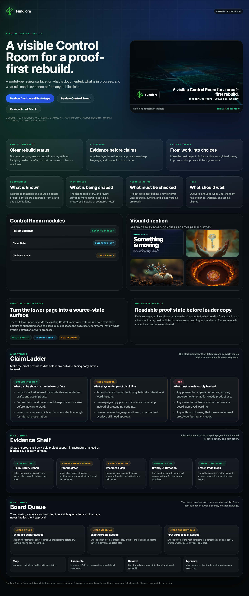

Project snapshot
What Fundiora/FUND is, what is being rebuilt, and which decisions are currently moving.

A public-facing direction for the Fundiora/FUND identity: show the Base-native project work, the build trail, the utility roadmap, and the evidence gates before any public claim becomes final.

This draft stops treating Fundiora and FUND as separate products. Fundiora is the name and project surface. FUND is the token ticker connected to that project identity.
Fundiora / FUND should be explained as one Base-native project identity with a public surface that makes status, utility work, evidence, and roadmap decisions understandable.
The page should feel alive and concrete without jumping ahead of proof, product, or approval.
What Fundiora/FUND is, what is being rebuilt, and which decisions are currently moving.
Visible progress through local artifacts, review surfaces, screenshots, and versioned updates.
Utility lanes are real work tracks: product access, evidence workflows, community input, and onchain proof checks.
Public wording should follow proof, source freshness, owner approval, and exact channel decisions.
The sensitive areas are not erased. They are turned into buildable lanes with owners, evidence, and review gates before public wording.
Capture questions, sources, and community signals as review inputs without implying automatic rights or outcomes.
Track token context, onchain reads, source freshness, limitations, and readiness labels in one visible place.
Design the first practical utility surface as a reviewed product flow before describing it externally.
Economic, channel, and ecosystem topics stay internal until mechanisms, evidence, and exact language are approved.
For review: visible momentum without exposing private working notes, local paths, or internal operator systems.

The visual direction can communicate depth, Base-native energy, and product momentum while still keeping final claims approval-gated.
The hero can lead with identity and momentum; the deeper utility and sensitive lanes remain staged through proof and owner review.
This keeps us shipping while preserving the hard gates around public distribution.
Use “one Fundiora/FUND identity + Base-native project surface + utility roadmap under review” as the direction.
Public candidate stays clean. Internal review surface contains the full utility-lane detail and evidence requirements.
Prioritize a read-only holder/community proof and ops flow before any broad public utility wording.
GitHub Pages, public links, admin sends, or social posts happen only after explicit final approval.